Drone Delivery - Progetto di Grafica AA 2015/2016
Concezione del gioco
Ispirato dalla visione di numerosi appassionanti video sulle gare tra droni, ho deciso di modificare il
progetto car facendolo diventare un gioco riguardante i droni. Mentre cercavo un modello poligonale adeguato
mi sono imbattuto in un modello chiamato "drug drone", quindi ho deciso che invece di trattarsi di un semplice
racing game, sarebbe stato un gioco riguardante un drone utilizzato per consegne di droga.
Sono partito modificando il primo step del progetto car, allontando le ruote dalla carlinga dell'auto e cambiando l'asse
di rotazione nell'asse y, tramite la glRotate , in modo da simulare la rotazione delle eliche del drone.
Sono poi passato al secondo step del progetto car, in cui ho modificato la fisica, in modo da farle rispettare i vincoli
che si richiedono al volo di un drone, ovvero: potersi alzare in volo, non poter andare sotto il suolo, non potersi muovere in avanti
indietro o di lato se ci non si è decollati. Inoltre le eliche devono essere in rotazione continuamente, indipendentemente dall'accelerazione
che comanda l'utente. Per il resto il motore fisico è stato lasciato intatto (resta per eventuali raffinamenti successivi una sofisticazione
di esso, in modo che il drone una volta libratosi possa ruotare da fermo).
Quindi partendo dal terzo step del progetto car, in cui sono state inserite le modifiche precedenti, si è finalmente
aggiunto il modello poligonale del drone, opportunamente modificato con Blender. Infine si è usato come base l'ultimo step del progetto car
per applicare tutte le altre modifiche che hanno reso il gioco nella sua veste definitiva che si può vedere adesso (muro, texture, telecamera, manifesti, scatole).
Scopo del gioco
Nel gioco si impersona un trafficante internazionale di droga, che per mezzo del suo drone porta stupefacenti oltre confine (simboleggiato dal muro) ed ottiene in
cambio denaro. Sia gli stupefacenti che il denaro sono rappresentati da scatole, che vengono raccolte automaticamente dal drone quando ci passa dentro. Le scatole di denaro
spuntano sempre da un lato del muro e quelle di stupefacenti dall'altro. Quando il giocatore raccoglie una scatola di un tipo, quella dell'altro appare al di là del confine.
Ogni scatola di denaro contiene un milione di dollari, il gioco termina quando il giocatore riesce
a raccogliere cinque milioni di dollari. Siccome ogni partita è cronometrata, l'obiettivo del giocatore è minimizzare il tempo necessario a raccogliere tutto il denaro.
Controlli
Per i controllare gli input, si è usato un ciclo degli eventi e la libreria SDL per interpretare i diversi tipi di input.
Il drone guadagna quota e perde quota rispettivamente con il tasto su ed il tasto giù, accelera in avanti ed indietro rispettivamente con W e S, mentre sterza a sinistra e destra
rispettivamente con A e D. Questi controlli sono stati implementati attraverso la cattura nel ciclo degli eventi SDL_KEYDOWN e SDL_KEYUP. Mediante la funzione EatKey si aggionano i flag
che segnalano se un tasto è stato premuto o no, mentre nella DoStep si aggiornano conseguentemente a queste pressioni di tasti i rispettivi parametri.
Sempre mediante lo stesso tipo di eventi sono gestiti i tasti da F1 ad F5, che serono rispettivamente per cambiare la telecamera, attivare la visione in wireframe,
disabilitare la texture del drone per vederlo semplicamente colorato, disabilitare la texture del pavimento, disattivare l'ombra del drone.
Inoltre tramite gli eventi SDL_MOUSEWHEEL e SDL_MOUSEMOTION è stato possibile implementare il movimento della telecamera, quando viene selezionata la visione dalla telecamera libera.
Approfondimento dettagli tecnici
Il drone
Il modello poligonale del drone è stato scaricato da internet, da uno dei tanti siti che permettono di scaricare gratuitamente modelli poligonali.
Dopo diversi tentativi si è optato per questo specifico modello a causa del numero basso di poligoni, infatti con modelli più definiti il numero di fps non era soddisfacente.
Il file, in formato .blend è stato aperto con blender ed editato, al fine di separare in due file lo chassis del drone dall'elica; una volta fatto i due file sono stati esportati in formato .obj.
Per far ruotare le quattro eliche, si è usata una glRotate, con una variabile sull'asse y, che ad ogni passo di fisica viene incrementata di una quantità costante.
In seguito è poi stata applicata una texture tipo fibra di carbonio allo chassis del drone, mediante la funzione SetupEnvmapTexture che usa la generazione automatica delle texture S e T.
In questo modo la texture è proiettata sull'oggetto con uno sphere mapping.
Va notato che, essendo il drone l'oggetto principale del gioco, con numerosi metodi e variabili, è stato giudicato opportuno implementare una classe apposita.
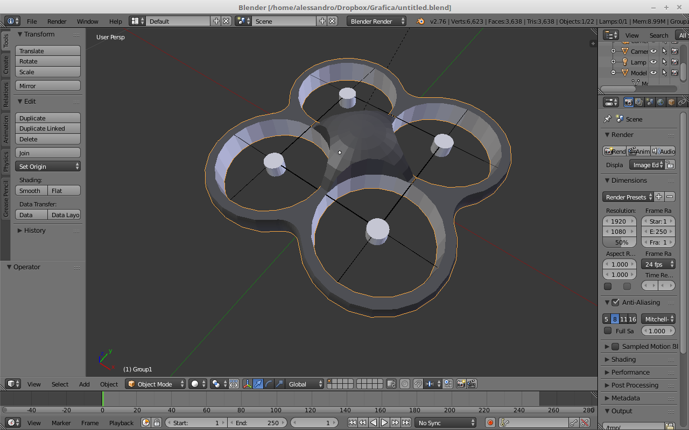
Il muro
Per realizzare il muro si è creato un semplice parallelepipedo con Blender, per poi esportarlo in formato .obj. Lo si è posizionato al centro dello scenario.
Il metodo drawMuro si occupa di generarlo, colorandolo di grigio e scalandolo con la glScalef in modo che occupi orizzontalmente tutto lo scenario. Come per tutte le altre implementazioni di oggetti dello scenario, la relativa funzione si trova in scenario.cpp.
Per rendere il gioco realistico, bisognava
far sì che non si potesse passare attraverso il muro, ma lo si dovesse superare in altezza per valicarlo. Questo è stato fatto mediante semplici controlli all'interno della doStep: se l'altezza del drone
è inferiore o pari a quella del muro e si tenta di avanzare trovandosi di fronte ad esso, la posizione lungo l'asse z del drone rimane costante.
Le scatole ed i manifesti
Come già detto sopra, la chiave del gioco sono le scatole contenenti droga e denaro. Queste sono disegnate a schermo grazie alla funzione drawCube, che si trova nel file scenario.cpp.
Il metodo si occupa sia di generare le scatole, che di posizionarle, che della logica che sta dietro alla generazione (una scatola invece che l'altra, far scomparire la scatola ed apparirne un'altra se il drone ci è entrato).
Le coordinate del cubo vengono create grazie ad un generatore di numeri pseudo casuale (tranne la y, visto che le scatole stanno sempre sul terreno). Dato lo scopo del gioco, da un lato del muro appariranno solo scatole droga e dall'altro scatole denaro.
Le facce del cubo vengono definite mediante GL_QUADS, mentre gli spigoli tramite GL_LINE_LOOP e GL_LINES. Viene poi applicata manualmente, fornendo esplicitamente le coordinate, una texture su ogni faccia del cubo, ad indicare di quale tipo di scatola si tratta.
In modo del tutto equivalente sono stati creati i manifesti WANTED, che raffigurano il pericolosissimo trafficante di droga ricercato dalla polizia internazionale (l'autore del gioco).
Le uniche differenze significative sono che non si tratta di cubi, ma di parallelepipedi e che la texture (una foto personale, come richiesto da specifiche), non è stata applicata su tutte le facce, ma solo su quella anteriore e su quella posteriore.
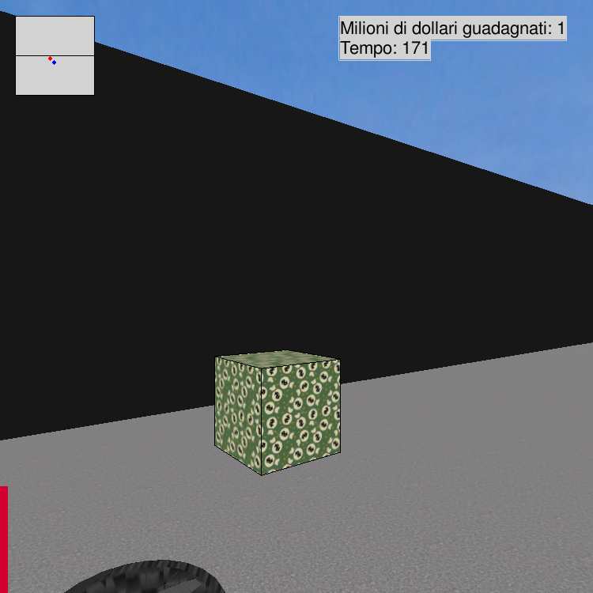
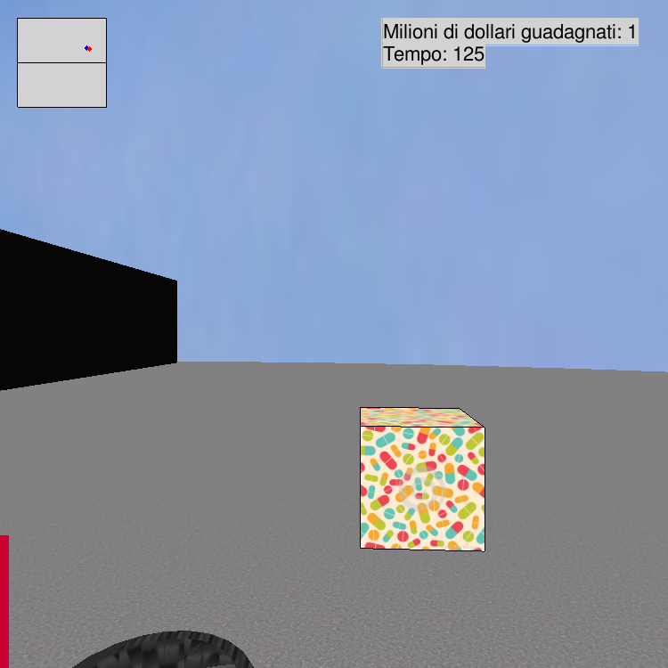
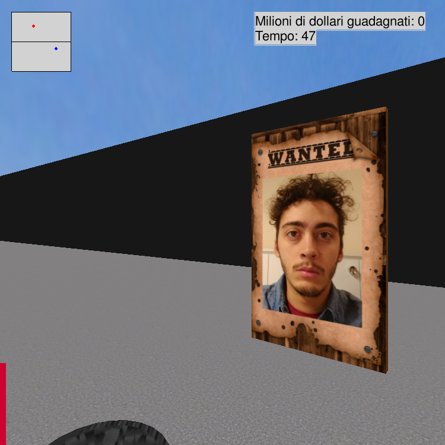
Il terreno
Il terreno di gioco è composto da un numero di quads, ognuno colorato di grigio. La funzione drawFloor può esser sempre trovata in scenario.cpp.
Ad ogni quad è applicata la texture di un pattern di asfalto, in modo da rendere il paesaggio più realistico. Questo è fatto manualmente, specificando esplicitamente le coordinate texture.
Tramite F4 la texture può essere disabilitata.
La sussistenza fisica del pavimento è realizzata in doStep, con un semplice controllo che verifica che le coordinate y non possano andare in negativo.
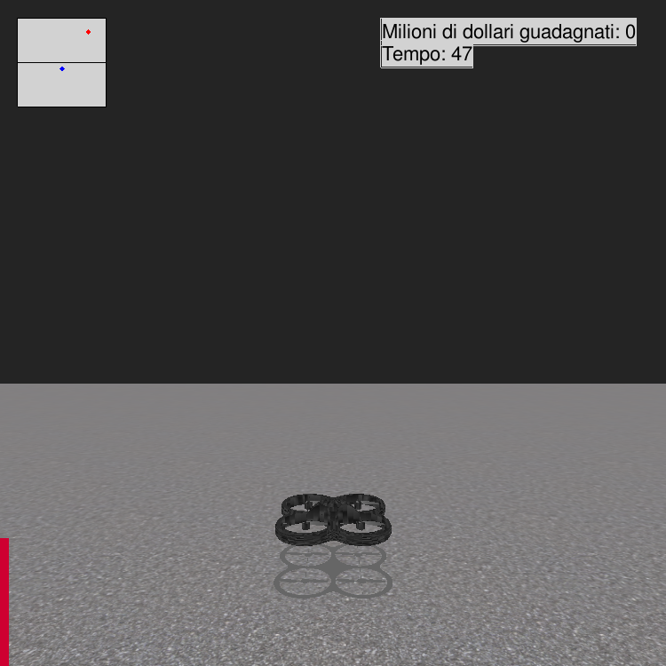
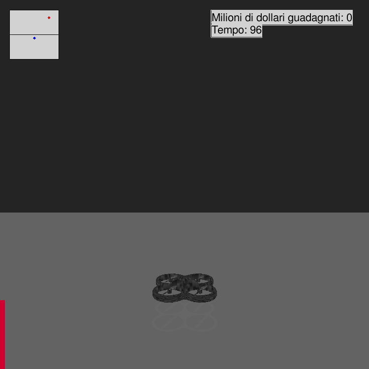
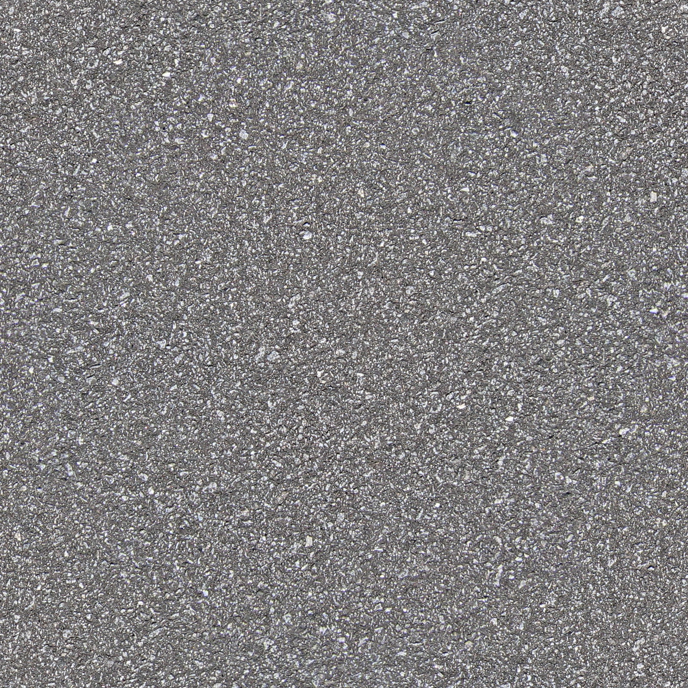
Il cielo
Il cielo dello scenario viene realizzato per mezzo delle funzioni drawSphere e drawSky, che possono essere entrambe trovate in scenario.cpp. La prima si occupa di disegnare una sfera delle dimensioni desiderate,
mentre la seconda applica ad essa una texture per rendere il cielo più realistico. Nel caso sia attivato il flag useWireframe, si attiva la modalità di visualizzazione a wireframe, ovvero si rimuovono texture, colori e luci, lasciando appunto solo il modello geometrico
della figura; questo è reso possibile dalla funzione glPolygonMode. Per rendere i limiti del mondo in modo effettivo, si è poi aggiunto un controllo nella DoStep, che impedisce di aumentare ulteriormente la coordinata (sia essa lungo x, y o z) del drone se ci si trova
già lungo il perimetro della sfera.
Illuminazione
La scena viene illuminata da una luce dichiarata nel main come GL_LIGHT0, definita nel metodo rendering. Questa è una luce puntiforme, a posizione fissata, direzionale.
Si sono mantenuti come nel progetto car i parametri di luce diffusa, ovvero quello che crea un effetto 3D, e quello di luce speculare, che crea un effetto di luccichio.
Inoltre sono stati effettuati dei test utilizzando un'altra luce, con parametri GL_FLAT e GL_SMOOTH, anche se i risultati non sono stati sufficientemente notevoli da meritare di essere riportati graficamente nella relazione.
Ombra
L'ombra del drone è realizzata in modo molto semplice, renderizzando un secondo modello poligonale del drone, ma scalato in modo da avere spessore nullo (asse y) e posizionato a terra.
Per rendere più realistica l'ombra, si è deciso di farla ingrandire man mano che il drone prende quota. Questo è fatto molto semplicemente facendo diventare in funzione della posizione y del drone, i parametri della glScalef.
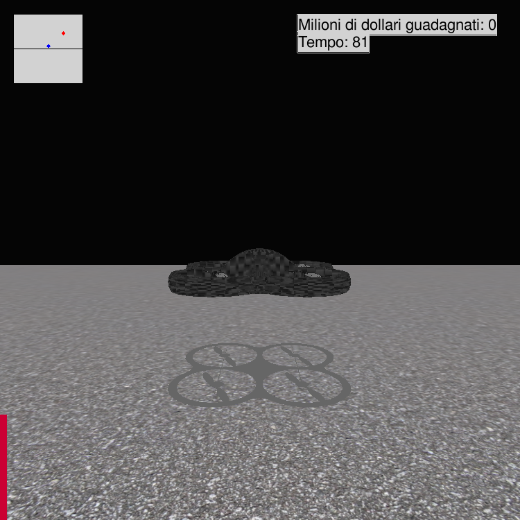
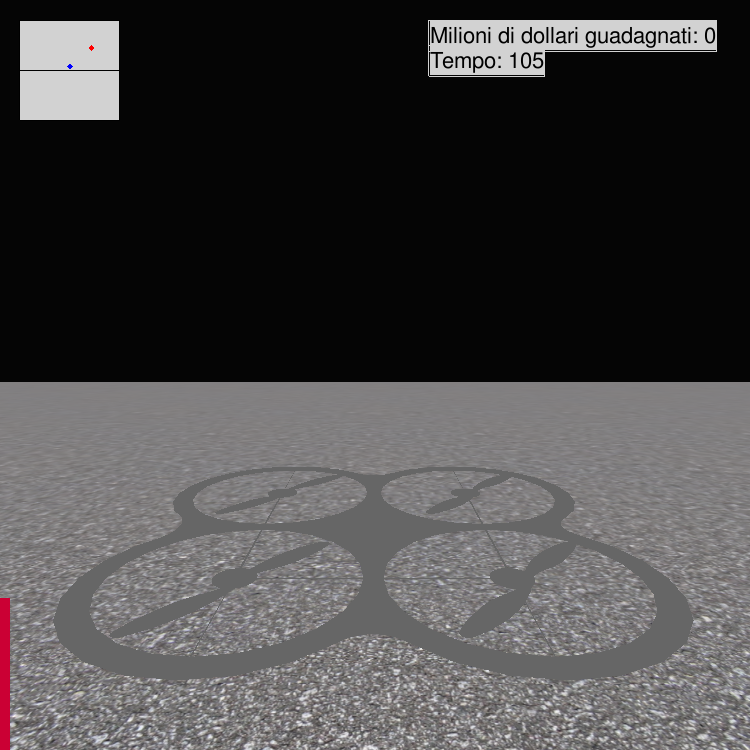
Gestione Telecamera
La telecamera è gestita tramite una funzione chiamata setCamera, che all'interno di uno switch modifica i parametri della vista del giocatore, che verranno usati nell'invocazione di gluLookAt.
Le visuali possibili sono quattro: CAMERA_BACK_DRONE, che inquadra il drone con una visuale in terza persona da dietro, CAMERA_TOP_FIXED, che inquadra il drone dall'alto perpendicolare al drone stesso, CAMERA_TOP_DRONE, che è posizionata
sulla parte superiore del drone ed inquadra una delle eliche e la rispettiva parte dello chassis, CAMERA_MOUSE, che è una telecamera libera, che puà essere ruotata usando il tasto sinisto del mouse e zoomata usando la rotella.
Questa funzionalità è implementata per mezzo di operazioni di glTranslatef e glRotatef sui parametri eyeDist, viewBeta e viewAlpha.
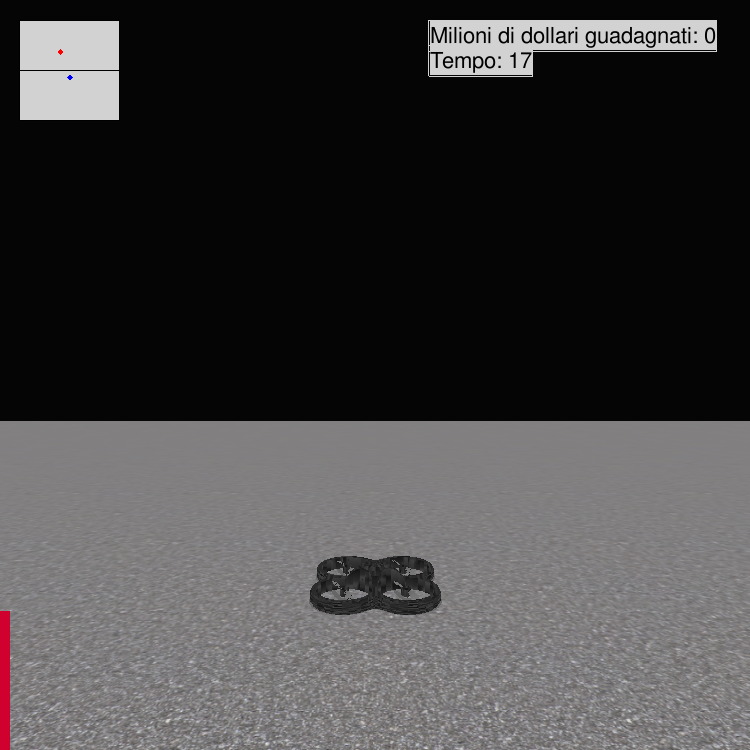
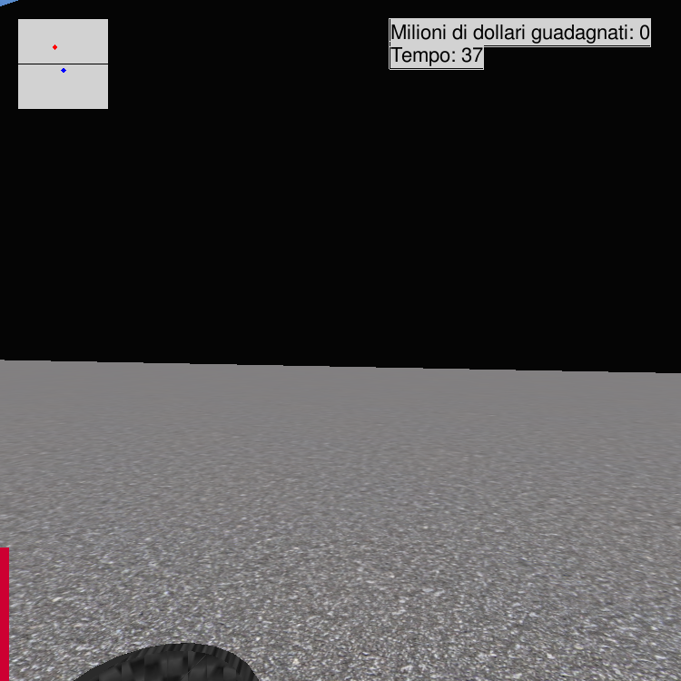
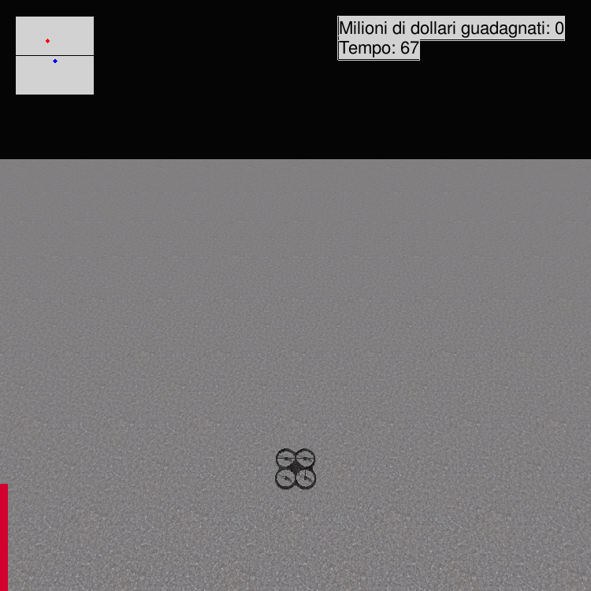
L'interfaccia
Per progettare l'interfaccia di gioco è stato necessario settare le matrici di trasformazione in modo tale che le coordinate in spazio oggetto fossero le coordinate dei pixel sullo schemo, in modo cioè di disegnare dirattamente in 2D sopra la scena.
Ciò è reso possibile grazie al metodo SetCoordToPixel, il quale imposta correttamente le matrici di proiezione e di trasformazione prima di poter disegnare a schermo usando nuovamente le primitive OpenGL.
Gli elementi dell'interfaccia sono i seguenti: la barra degli fps, che mostra visivamente (sia tramite l'altezza che il colore), il numero di fotogrammi per secondo renderizzati; una mappa dello scenario posizionata in alto a sinistra, che mostra
le posizioni di drone (in blu) e della scatola (in rosso), mostrando anche il muro. I due cursori sono realizzati semplicemente con GL_QUADS.
Le posizioni sono ottenute a partire dalle coordinate reali, convertendole opportunamente alla dimensione della mappa; un contatore di punteggio, simpaticamente visualizzato come "milioni di dollari guadagnati", ed un contatore del tempo di gioco, mostrati in secondi; entrambi
sono realizzati tramite la libreria SDL_TTF, che, dopo averla inizializzata col comando TTF_Init e scelto il font (nel nostro caso FreeSans.ttf), quindi è stata creata una SDL_Surface su cui il testo verrà scritto, il cui contenuto è interpretato come una texture che è possibile applicare ai diversi oggetti nel mondo di gioco.
Autore
Alessandro Cocilova
Matricola 0000771758
alessandro.cocilova@studio.unibo.it